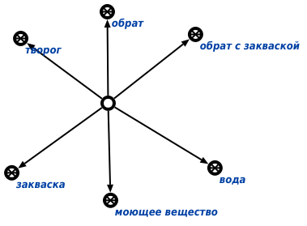

Команда поиска подклассов заданного класса, входящих в программу, соответствующую указанному классу процессов предназначена для нахождения подклассов заданного класса, входящих в программу, соответствующую указанному классу процессов. Первым аргументом команды является класс сущностей, подклассы которого необходимо найти. Вторым аргументом команды является класс процессов, соответствующих программе. Результатом выполнения команды является множество, состоящее из подклассов заданного класса сущностей, входящих в программу, соответствующую указанному классу процессов. Например, для конкретного класса сущностей - вещество - и конкретного класса процессов - приготовление творога "Хуторок" - будет получен следующий результат:
